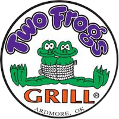

Two Frogs Grill
Your perfect night out destination
Great food, live music, and unforgettable nights await you
What We're Known For
Restaurant Dining
Fresh meats and secret house seasonings daily
Live Music Events
Occasional live music with big industry names
Private Events
Catering and party services for special occasions
Our Story
Right off I-35 exit 31A
Big music industry names visit
Two Frogs Grill serves some of the best food you can find in Oklahoma with house-secret sauces, fresh daily meats, and occasional visits from big names in the music industry.
What People Are Saying
I was blown away by how much food you got when you ordered. Service is great. Fun atmosphere kind of a nightclub bar feel but was a really cool restaurant at the same time. Definitely worth stopping and getting off the highway on the way by. I will b...
Exquisite Service from Dane. I travel all of the country for work almost all year long and this establishments red snapper is amazing. The frog legs were also very good and highly recommended. Our server Dane was very helpful and was there to check o...
Talk about some amazing food! The frog legs and the Cajun catfish w crawfish tails were wonderful! Served up a couple of incredible cocktails, too. Must stop for travels.